Mes expériences professionnelles
De mes premiers emplois saisonniers à mon stage de fin d'études en ressources humaines, chaque expérience m'a rapprochée d'un même fil rouge : la gestion des personnes et des activités, sur le terrain comme en coulisses.
Stage RH au Carlton Cannes
- Contexte
- Direction des Ressources Humaines d'un hôtel 5 étoiles en haute saison, marquée par de grands événements internationaux (Festival de Cannes, Cannes Lions...), avec des effectifs saisonniers et permanents venus d'horizons très différents. L'effectif double entre début avril et mi-septembre.
- Missions
- Administration du personnel : dossiers, contrats, documents obligatoires. Coordination des parcours d'intégration des nouveaux talents et accueil des saisonniers. Conception de supports de communication interne. Veille à la conformité RH. Appui sur des projets RH transverses liés à la fidélisation.
- Compétences mobilisées
- Piloter les relations avec les équipes, aider à la décision au quotidien, adapter sa communication (langues, situations sensibles).
- Résultats tangibles
- Participation à l'intégration administrative de plus de 200 saisonniers : DPAE (Déclaration Préalable à l'Embauche), constitution des dossiers, vérification des titres de séjour, création des accès à l'hôtel (cantine, DAV...). Création d'un catalogue de formations pour la période septembre 2026 - août 2027. Mise en place d'un programme d'animations internes sur toute la saison : Celebrate Service Week, repas à thème, distributions de glaces cet été. Co-organisation du cocktail de début de saison réunissant plus de 800 collaborateurs.
Ce que cela m'a appris : être responsable ne signifie pas tout maîtriser, mais savoir anticiper, s'organiser, écouter les autres et demander de l'aide lorsque c'est nécessaire.
Lire mon retour d'expérience sur la responsabilité →Lire mon retour d'expérience sur la communication →
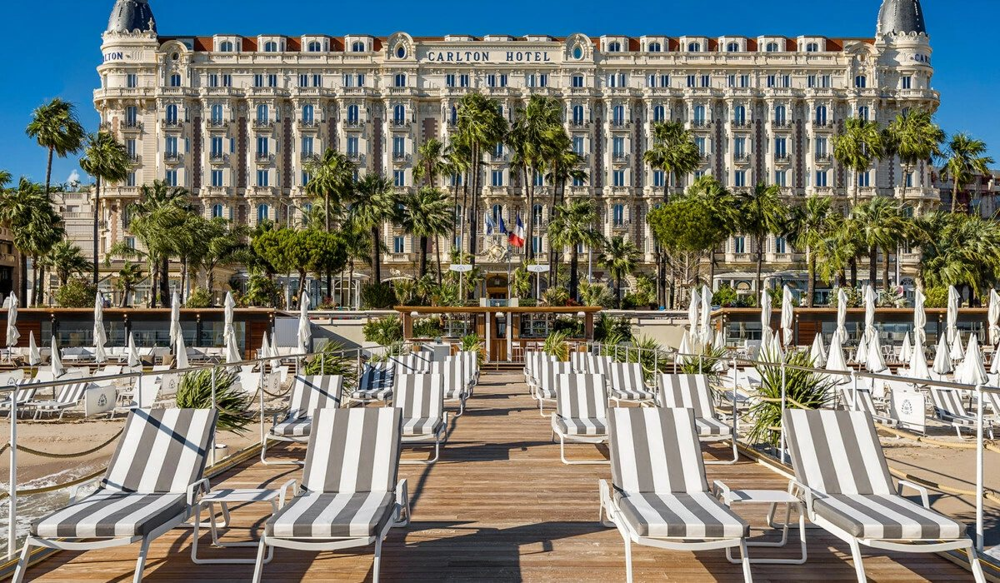
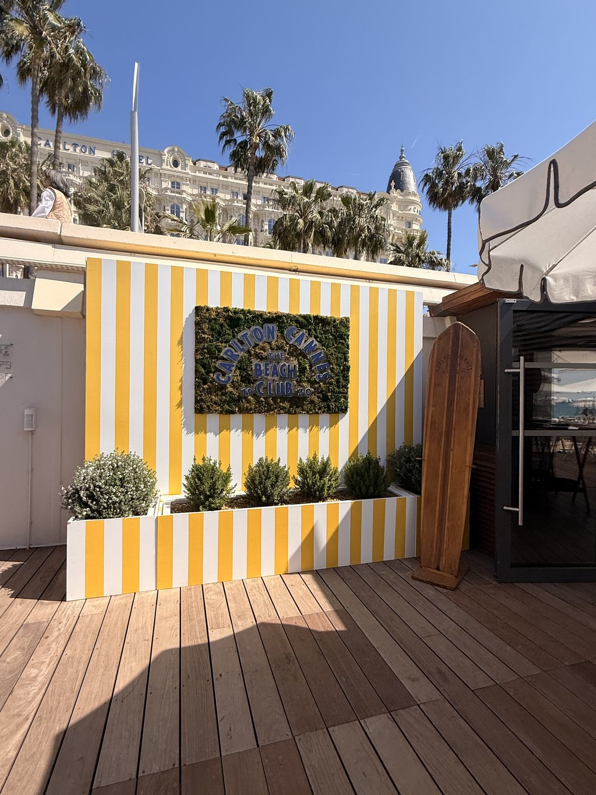
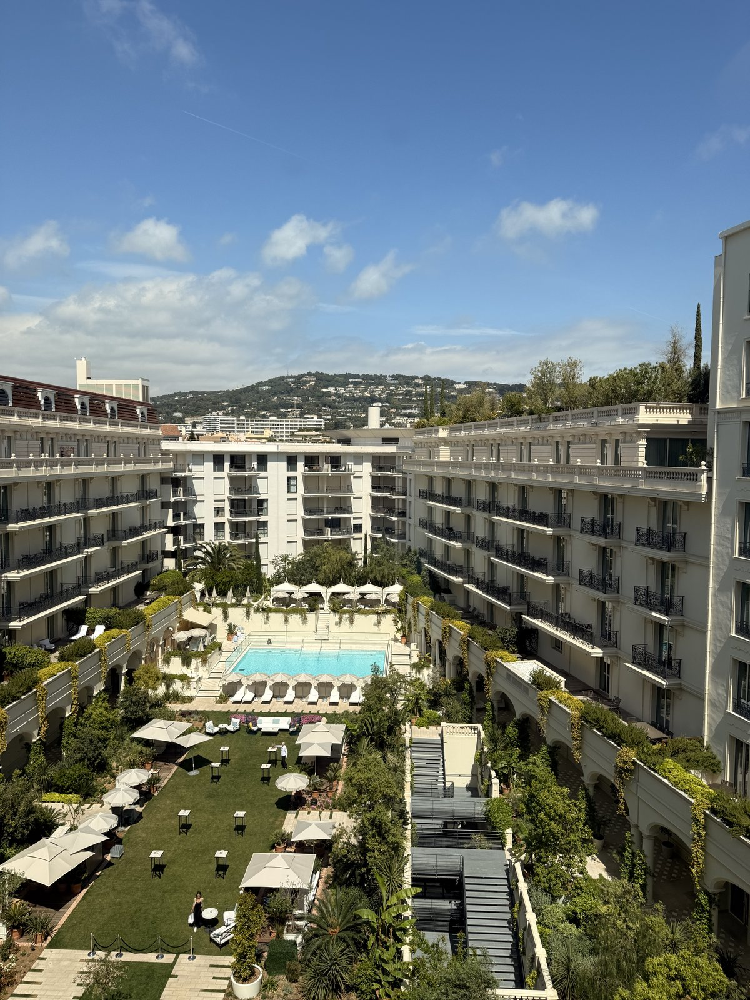
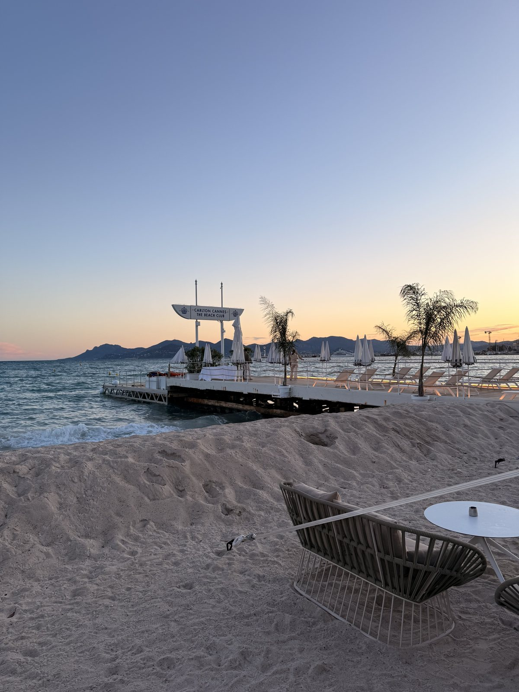
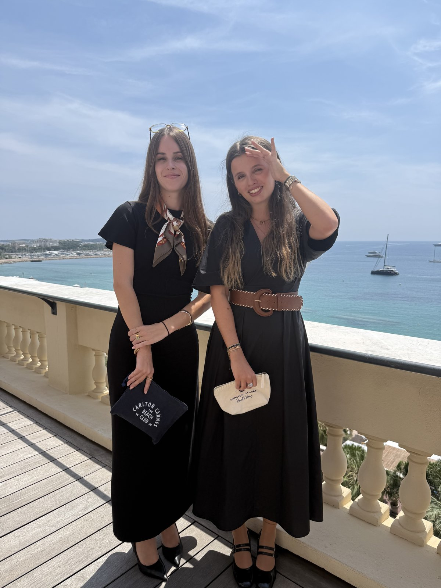
Vendeuse — JD Sport
JD Sport, enseigne de distribution d'articles de sport et de sneakers. Conseil client et accompagnement à l'achat, mise en rayon et maintien de l'attractivité du point de vente en journée ; gestion des stocks en entrepôt le soir, en équipe et dans un environnement dynamique orienté résultats.
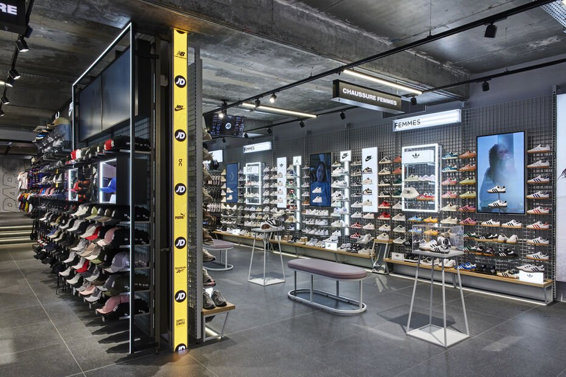
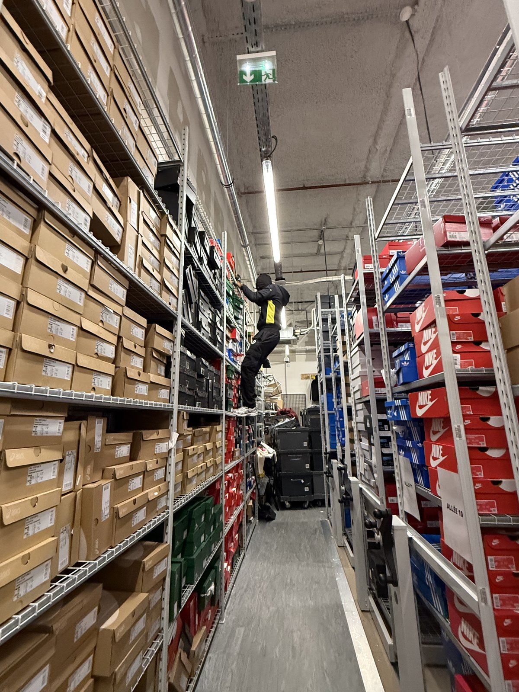
Stage Communication — Lux Academy
Stage au sein de Lux Academy, start-up spécialisée dans l'éducation. Face à une identité visuelle peu claire et une communication client trop impersonnelle, j'ai proposé et mené seule plusieurs actions : une charte graphique adaptée à la cible, un planning éditorial mensuel pour les réseaux sociaux (Instagram, Facebook), et des mails types différenciés par cible (élèves / professeurs).
Ce que cela m'a appris : à passer à l'action et prendre des décisions concrètes de façon autonome, dans un environnement peu cadré.
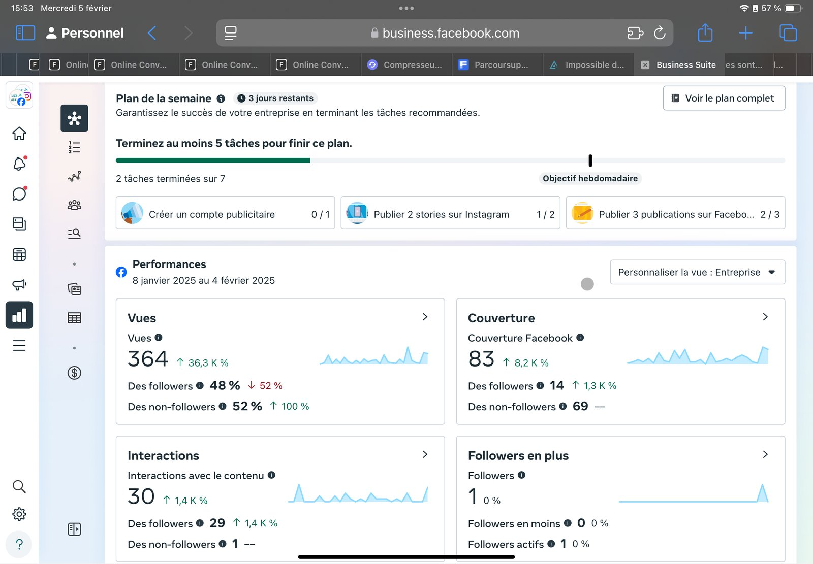
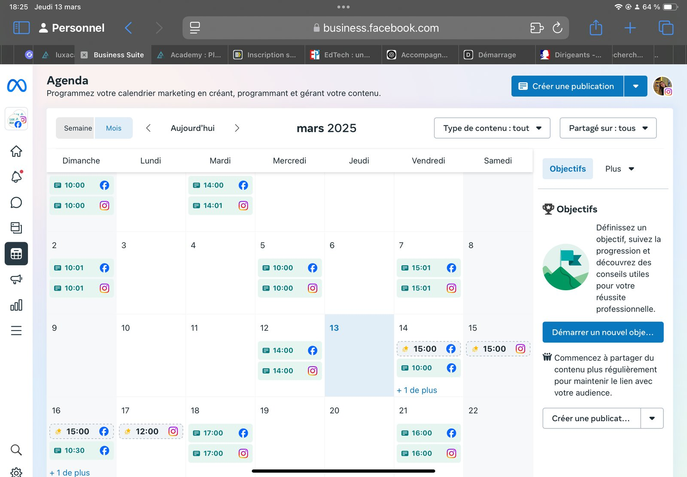
Serveuse et barmaid — Restaurant, Cannes
Service en salle et au bar, gestion des commandes, relation client et gestion du stress en milieu dynamique.
Stage — Rakuten France, Paris
Introduction aux stratégies de marketing digital et de gestion des données ; observation des processus internes d'une grande plateforme e-commerce.
Aide à une mandataire immobilière — iad France
Promotion de services et ciblage clientèle sur le terrain : distribution des calendriers iad dans les boîtes aux lettres de ma ville, pour le compte de ma mère, mandataire chez iad, communication directe et relation client de proximité.
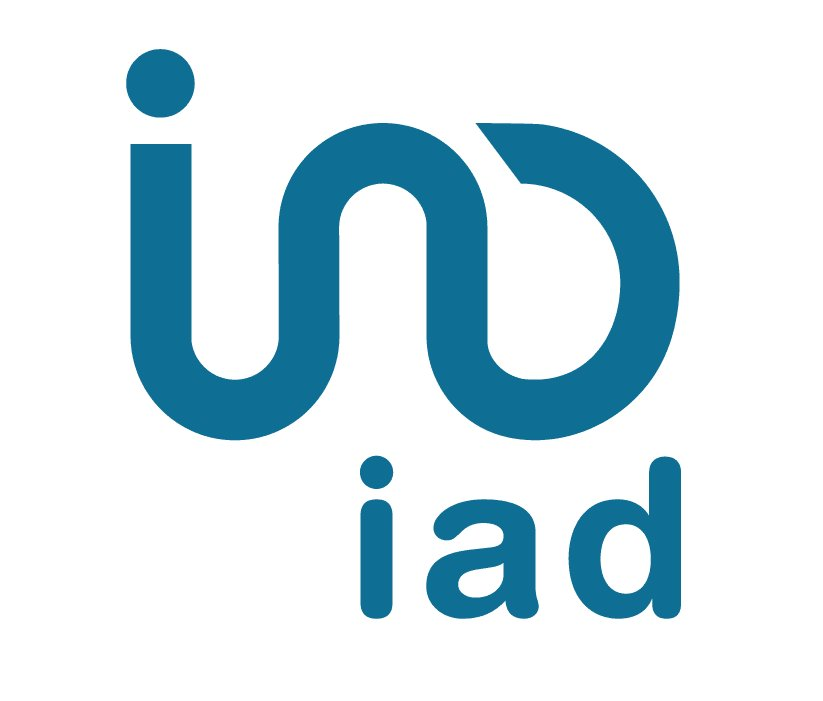
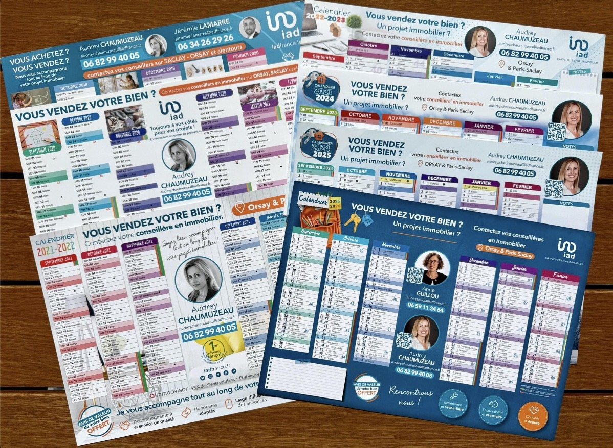
En dehors des études
BDE Carnage — Pôle partenariats
Membre du Bureau des étudiants de la filière GEMA (mandat 2024-2025), en charge de démarcher des entreprises pour établir des partenariats. Un rôle qui m'a demandé de sortir de ma zone de confort : de l'appréhension des premiers démarchages à l'obtention de partenariats avec des enseignes reconnues.
Lire mon retour d'expérience complet →J'avais faim — Bénévolat
Distribution régulière de repas aux personnes dans le besoin ou sans domicile fixe, à Cannes. Un engagement qui s'inscrit dans la durée et qui m'a appris l'importance de la présence, de l'écoute et du respect.
Lire mon retour d'expérience complet →Danse, voyages & mode
En dehors des études, je pratique la danse (zumba, modern jazz) et j'aime voyager à la découverte de nouvelles cultures. Je suis également passionnée de mode, une sensibilité que je retrouve dans mon attrait pour l'univers du luxe.
Ce que ces expériences démontrent
Ces expériences dessinent une progression cohérente : d'abord le contact client et le travail en équipe (iad, restauration, JD Sport), puis une première approche des données et de la communication digitale (Rakuten, Lux Academy), pour aboutir à mon stage de fin d'études au Carlton Cannes, où j'ai pu conjuguer les deux : gérer des personnes tout en m'appuyant sur des processus RH structurés. Mon engagement associatif, au BDE comme auprès de J'avais Faim, prolonge ce même fil rouge : le sens du collectif et l'attention portée aux autres. C'est cette dimension humaine que je souhaite continuer à mettre au service d'un secteur exigeant, comme l'hôtellerie de luxe ou l'événementiel.